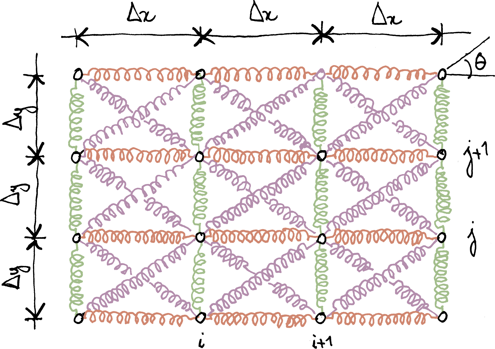
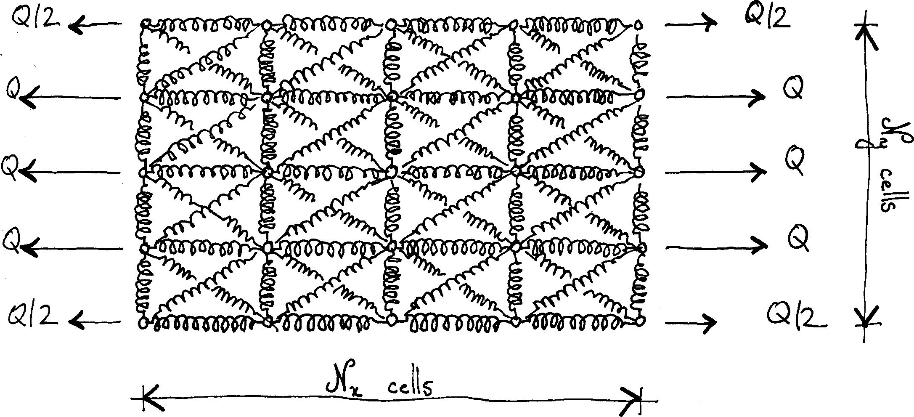

In the previous instalment of this series on homogenization, we derived the homogenized properties of a rectangular spring mesh. Our goal in this post is to analyse the “convergence” towards the homogenized stiffness; meanwhile, we will discuss the size of the so-called representative volume element (RVE).
In the previous episode…
The system considered in this post is shown below. The length of the diagonal springs is \(\ell\); they make an angle \(θ\) with the \(x\)-axis (\(Δx = \ell \cosθ\), \(Δy = \ell \sinθ\): grid spacing along the \(x\) and \(y\) axes). The stiffness of the diagonal springs is \(k\); the stiffnesses of the horizontal and vertical springs are \(χ_x \, k\) and \(χ_y \, k\), respectively.

We showed that, in the homogenization limit, this spring mesh behaves as a plate loaded in its plane only. The effective constitutive law of the equivalent plate reads
\[N_{xx}=A_x^\text{eff}ε_{xx}+ν_{xy}^\text{eff}A_y^\text{eff}ε_{yy},\] \[N_{yy}=A_y^\text{eff}ε_{yy}+ν_{yx}^\text{eff}A_x^\text{eff}ε_{xx},\] \[N_{xy}=A_{xy}^\text{eff}ε_{xy},\]
where \(N_{xx}\), \(N_{yy}\) and \(N_{xy}\) are the membrane stresses (these are internal forces per unit-length). The effective stiffnesses \(A_x^\text{eff}\), \(A_y^\text{eff}\) and \(A_{xy}^\text{eff}\) are given by the following expressions
\[A_x^\text{eff}=k\operatorname{cotan}θ\bigl(1+\cos2θ+χ_x\bigr),\] \[A_y^\text{eff}=k\tanθ\bigl(1-\cos2θ+χ_y\bigr),\] \[A_{xy}^\text{eff}=2ν_{xy}^\text{eff}A_y^\text{eff} =2ν_{yx}^\text{eff}A_x^\text{eff}=2k\sin2θ.\]
In the present post, we will show through numerical experiments that, for sufficiently large meshes, the set of springs indeed behaves as a continuous flat membrane.
A uniaxial tension experiment
We consider a simple uniaxial tension experiment (see below). The system is a \(\mathcal N_x×\mathcal N_y\) grid. Except for corner nodes, nodes that are located on the vertical boundaries are subjected to horizontal forces \(Q\) (on the right-hand side) and \(-Q\) (on the left-hand side). For large systems, this is equivalent to a uniformly distributed load \(q=Q/Δy\). Corner nodes pick only the load applied to half the \(y\)-spacing: therefore, they are subjected to \(±Q/2\).

In the homogenization limit, the system should behave as a plate under uniaxial tension, for which we should have \(N_{xx}=q\), \(N_{yy}=0\) and \(N_{xy}=0\). Plugging into the constitutive equations, we find that \(N_{xx}=\tilde{A}_x^\text{eff}ε_{xx}\), where the uniaxial stiffness \(\tilde{A}_x^\text{eff}\) is defined as follows
\[\tilde{A}_x^\text{eff} =A_x^\text{eff}\bigl(1-ν_{xy}^\text{eff} \, ν_{yx}^\text{eff}\bigr).\]
For “large” (but finite) spring models, we therefore expect the average strain \(⟨ε_{xx}⟩\) to be related to \(q\) through the following formula: \(q=\tilde{A}_x^\text{eff}⟨ε_{xx}⟩\).
In order to assess the validity of the above approximation, we need to evaluate the average strain \(⟨ε_{xx}⟩\) in the spring model. To do so, we draw inspiration from the following formula that relates (for continuous systems) the average strain \(⟨\boldsymbol{ε}⟩\) in \(Ω\) to a boundary integral of the displacement \(\vec u\)
\[⟨\boldsymbol{ε}⟩ =\frac1V∫_{∂Ω}\tfrac12\bigl(\vec{u} ⊗ \vec{n} + \vec{n} ⊗ \vec{u} \bigr),\]
where \(\vec n\) denotes the outer normal to \(∂Ω\). In the present case, \(\vec e_x⋅\vec n=0\) on the top and bottom boundaries. On the left and right boundaries, the integrals are discretized as follows
\[⟨ε_{xx}⟩ \simeq \frac{1}{\mathcal N_x \, \mathcal N_y \, Δx} \sum_{j=0}^{\mathcal N_y} \, w_j \, \vec e_x ⋅\bigl(\vec u_{\mathcal N_x,j}-\vec u_{0, j}\bigr),\]
where \(\vec u_{i,j}\) denotes the displacement of the \((i, j)\) node, located at \(x=i \, Δx\), \(y=j \, Δy\). In the above formula, the weights \(w_j\) are \(w_j=1\) for off-corner nodes and \(w_j=\frac12\) for corner nodes.
The average strain \(⟨ε_{xx}⟩\) being defined, we introduce the apparent uniaxial stiffness \(\tilde{A}_{x}^{\text{app}}=q/⟨ε_{xx}⟩\) and check that \(\tilde{A}_{x}^{\text{app}}→\tilde{A}_x^{\text{eff}}\) as the size of the system grows to infinity.
Now that the stage is set, let us look at the results. In the remainder of this post, we will consider the following simple case: \(θ=π/4\) (square cells), \(χ_x=χ_y=χ\) (horizontal and vertical springs are identical), \(\mathcal N_x=\mathcal N_y=\mathcal N\) (square mesh). From the general expressions of the effective stiffnesses, we find in that case
\[A_x^\text{eff}=A_y^\text{eff}=k\bigl(1+χ\bigr),\quad ν_{xy}=ν_{yx}=\frac1{1+χ}\]
and
\[\frac{\tilde{A}_x^\text{eff}}{k}=\frac{χ\bigl(χ+2\bigr)}{χ+1}.\]
Apparent stiffness of a small system
For small systems, the apparent stiffness can be computed analytically. More details can be found in a companion post on the symbolic analysis of a spring mesh. We find, for a 1×1 system:
\[\frac{\tilde{A}_x^\text{app}}k=\frac{4χ\bigl(χ+1\bigr)}{2χ+1},\]
then, for a 2×2 system:
\[\frac{\tilde{A}_x^\text{app}}k =\frac{8χ\bigl(χ+1\bigr)\bigl(χ+2\bigr)}{\bigl(2χ+3\bigr)\bigl(3χ+2\bigr)},\]
finally, for a 3×3 system:
\[\frac{\tilde{A}_x^\text{app}}k =\frac{144χ\bigl(χ+1\bigr)\bigl(4χ^4+24χ^3+41χ^2+24χ+4\bigr)} {480χ^5+2888χ^4+5616χ^3+4771χ^2+1800χ+236}.\]
The above expressions of the apparent stiffnesses are plotted below. More precisely, we plot the relative error
\[\frac{\tilde{A}_x^\text{app}-\tilde{A}_x^\text{eff}}{\tilde{A}_x^\text{eff}}\]
against the stiffness ratio \(\chi\).
It is observed that, for a given value of \(\chi\), the error tends to decrease with the size of the system. However, even for 3×3 systems, the difference between apparent and effective siffnesses (about 20%) remains too high to conclude about convergence. This means that we need to explore larger systems.
Apparent stiffness of larger systems
For larger systems, it is no longer practical to establish closed-form expressions of the apparent stiffness. We must resort to numerical simulations, that are presented in a companion post.
The simulations are carried out for the set of parameters for which an isotropic effective behavior is expected, namely \(χ_x=χ_y=2\) and \(θ=π/4\). Then \(A_x^\text{eff}=A_y^\text{eff}=3k\) and \(A_{xy}^\text{eff}=2k\). Therefore, \(\tilde{A}_x^\text{eff}=\frac83k\).
In the figure below, we plot in log-log scale the relative error on the effective stiffness as a function of the size of the system.
From this plot, convergence (as a power of the system size) is quite clear. In other words, for large enough systems, the network of springs indeed behaves as a continuous membrane.
Convergence is quite slow, though: for the apparent stiffness to be within 1% of the effective stiffness, we need a 64×64 system.
Conclusion
In this post, we have verified (for a specific loading) that the homogenization procedure developed in the previous post was indeed correct.
We have shown that the size of the system under consideration is important: remember that, for homogenization to be meaningful, scales must be separated.
The convergence plot presented above can be used to introduce what is commonly –but somewhat confusingly– called the representative volume element (RVE). A system can be considered as a RVE if the relative error between the apparent and effective values of a specific property are below a given tolerance (Kanit et al., 2003).
From the above definition, it should be clear that there is no such thing as the RVE. At best, it is possible to define a RVE, for a specific quantity of interest (in the present case, the homogenized stiffness) and a user-specified tolerance.
In the next instalment of this series, we will introduce a little bit of randomness.